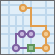
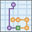

计划路径

“计划路径”确定了在流动的工作人员之间高效地划分任务的方法。
您需为该工具提供一组停靠点以及可以访问这些停靠点的车辆数。该工具可为车辆分配停靠点并返回路径，这些路径同时显示了每辆车如何能在最短时间内到达为其分配的停靠点。
利用“计划路径”，流动的工作人员能在更短的时间内到达更多的工作地点，从而提高生产效率并完善客户服务。
- 检查住宅、饭店或建筑工地
- 提供维修、安装或技术服务
- 派送物品和小包裹
- 进行销售拜访
- 将人员从家中送达至活动现场
“计划路径”的输出包括一个停靠点图层（按停靠点所分配至的路径进行编码）、一个路径图层（用于显示访问所分配停靠点的最短路径）和一个未分配停靠点图层（具体取决于是否存在无法到达的停靠点）。
如果选中 使用当前地图范围，则在分析中仅考虑当前地图范围中可见的要素。如果未选中，则考虑输入图层中的所有要素，包括超出当前地图范围的要素。
选择表示要访问的停靠点的点图层
选择路径（或车辆）待访问的点的图层。这些点会在输出中变为已分配或未分配的停靠点。
除了从地图选择图层，您也可以选择下拉列表底部的 选择分析图层。此选项将打开一个库，您可以在其中浏览并选择各种来源的数据集以用于分析。
该工具最多支持 2,000 个输入要素。
路径的出行模式
选择您的出行模式。输出路径将沿着道路或人行道并支持适用的规则，例如驾车或货运的单行道和违章转弯。可用的出行模式由您的组织管理员决定。
路径始于停靠点
指定车辆路径的起始地点和时间。
利用“计划路径”，您可以为您的车辆指定一个或多个起始位置。
如果指定了一个点位置，无论可用车辆的数量有多少，所有车辆都从该点出发。您可以选择具有一个点的点图层，也可以通过选择 添加点到地图并单击相邻点编辑按钮，然后单击该地图将一个点添加到该地图中。
当指定多个位置时，每辆车需要与其各自的点相关联。车辆的数量必须与图层中点的数量相匹配。选择具有多个点的图层并在 路径 ID 字段下拉列表中指定一个能唯一识别各个路径、车辆或驾驶人员的字段。
所有路径的起始时间均相同。起始时间的时区与一个或多个起始点所在的时区相同，因此请确保您输入的时间是当地时间。例如，假设您处于太平洋标准时间 (UTC-8:00) 且您为其选择路径的车辆处于山区标准时间 (UTC-7:00)。如果当前时间为太平洋标准时间的上午 9:30 （山区标准时间的上午 10:30） 且您的车辆需在 30 分钟内按其路径出发，则您应将起始时间设置为上午 11:00。
如果您的车辆在不同时区内出发，起始时间不能同步；相反，车辆发生了偏移。例如，如果一条路径起始于太平洋标准时间的某点，另一条路径起始于山区标准时间，并且您输入上午 11:00 作为起始时间，采用太平洋标准时间的路径将于太平洋标准时间的上午 11:00 开始， 而采用山区标准时间的路径将于山区标准时间的上午 11:00 开始 - 存在一个小时的时间差。
路径止于停靠点
指定车辆结束其路径的地点。
您可以通过配置路径在下列三个位置的其中之一来结束路径：
- 无论这些路径起源于一个还是多个位置，其起始位置均相同
- 单个位置
- 多个位置 - 即每条路径对应一个结束点
如果车辆在相同的位置开始和结束其路径，则选中 返回到起点。
若要将所有车辆的路径设为一个共同的结束点而非起始点，则取消选中 返回到起点并添加点到该地图或选择只包含一个点的图层。
若要将路径结束于唯一位置，取消选中 返回到起点并选择包含多个点的图层。车辆的数量必须与所选图层中的点数相等。在 路径 ID 字段下拉列表中，选择一个能唯一识别各个路径、车辆或驾驶员的字段。如果车辆始于多个位置且在多个位置结束，则为起始和结束图层所选的路径 ID 需要相匹配。
选择障碍图层
一个或多个要素，作为在基础街道上行驶时的临时限制（障碍）。您可以使用点、线或面要素指定障碍。
点障碍可以对倒下的树、事故、垂下的电线或完全阻塞街道中某个特定位置处交通的任何事物进行建模。允许在街道上行驶，但不可以通过障碍。您最多可以将 250 个要素指定为点障碍。
线障碍禁止穿过线障碍与街道相交的部分。例如，线障碍可用于对阻塞若干个路段交通的游行或抗议队伍进行建模。如果与所有线障碍相交的街道要素数量超过 500，则该工具将返回错误。
面障碍禁止穿过面与街道相交的部分。此类障碍的一个具体应用是对覆盖街道网络中某些区域且导致道路无法通行的洪水进行建模。如果与所有面障碍相交的街道要素数量超过 2000，则该工具将返回错误。
可确定路径的最大车辆数
指定可访问停靠点的车辆数。该工具最多支持 100 辆车。
根据停靠点的总数、您允许每辆车访问的停靠点数、停靠点之间的间隔距离、在每个停靠点所花费的时间以及您为每辆车的路径总时间设置的任何限制，该工具能够提供一个使用的车辆数比您在此指定的车辆数更少的解决方案。
每辆车的最大停靠点数量
这是平衡路径内整体工作量的两个参数之一。您可以指定一个介于 1 和 200 之间的值。
通过降低可分配给每辆车的最大停靠点数量，分配给每辆车的停靠点数量才有可能相等。此举有助于平衡驾驶员的工作量。然而，不足之处在于可能导致解决方案效率的降低。
通过增加每辆车的停靠点数量，该工具可以更加自由地找到效率更高的解决方案；然而，驾驶员和车辆间的工作量有可能分配不均。注意，您可以通过为 限制每辆车的路径总时间参数指定一个值来按时间以及按停靠点的数量平衡工作量。
下列示例说明了限制每辆车的最大停靠点数量或每辆车的总时间所产生的效果。在所有示例中，均有六个停靠点和起始于相同位置的两条路径。
|
平衡的行驶时间及每条路径的停靠点： 停靠点差不多是均匀地分散开，所以为均匀分配工作量而设置的每辆车的最大停靠点数量，将导致每条路径的持续时间大致相同。 |
|
|  |
每条路径平衡的停靠点及不平衡的行驶时间： 六个停靠点中的五个在起始位置附近聚集，而剩下的一个停靠点与其他停靠点相隔一段距离且需行驶较长的时间才能抵达。在两条路径间平分停靠点可造成不平衡的行驶时间。 |
|  |
每条路径不平衡的停靠点及平衡的行驶时间： 停靠点所在位置与上一个图形相同，但可通过增加每条路径的最大停靠点数量及限制每辆车的总行驶时间来平衡行驶时间。 |
在每个停靠点所花费的时间
设置在每个停靠点所花费的预期平均服务时间。例如，如果您正在为检查员计划工作日程且平均检查时间为 45 分钟，请输入 45。
假定在所有停靠点的服务时间均相同。
限制每辆车的路径总时间
指定某路径从开始到结束应持续的最长时间。这包括预期行驶时间及花费在该路径沿线停靠点的服务时间。如果驾驶员每天的工作时间不应超过给定的时间（如 8 小时），您可以在此指定限制时间。
有关平衡工作量，请参考 每辆车的最大停靠点数量的帮助。
结果图层名称
将在 我的内容中创建并添加到地图中的要素图层的名称。如果该名称的要素图层已存在，则系统将要求您提供其他名称。如果无法将一些输入停靠点分配至任何路径，则要素图层中将包含针对以下内容的图层：路径、已分配的停靠点以及未分配的停靠点。
如果选择了 包含路径图层，则结果中的每条路径还将保存为路径图层。路径图层中包含特定路径的全部信息，例如分配至路径的停靠点，以及出行方向等。如果您希望与组织内的其他成员共享各个路径，或使用地图查看器中的 方向按钮进一步修改路径，则创建路径图层将为您提供很大的帮助。路径图层使用针对要素图层提供的名称作为前缀，并添加作为分析中的一部分生成的路径名称，从而为每个路径图层创建一个唯一名称。
使用 将结果保存到下拉菜单，可以在 我的内容中指定文件夹的名称，要素图层和路径图层（如创建）将保存到该文件夹中。